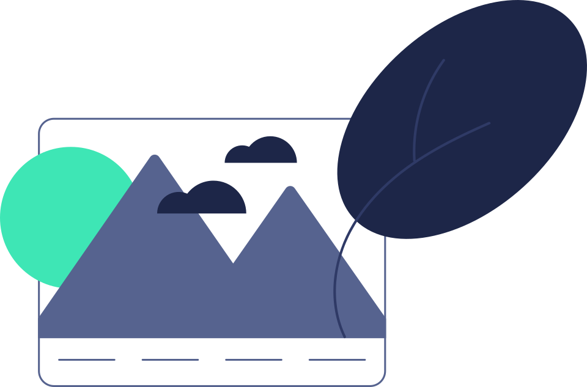

01Суть растрового малюнка і його особливості▼
Растрове зображення — це сітка з пікселів, кожен з яких має свій колір. Так зберігаються фотографії. Якість залежить від роздільної здатності: чим більше пікселів, тим більше деталей і тим більший файл. При збільшенні растр «розсипається» на квадратики.

Ключові поняття
- Піксель
- найменша точка растрового зображення
- Роздільна здатність
- кількість пікселів (напр. 1920×1080) або щільність (ppi/dpi)
- JPG, PNG, WebP, GIF
- основні растрові формати
Корисні ресурси
- Squoosh — порівняй формати та якість стиснення
Інструменти
02Огляд програм для роботи з растровою графікою▼
Професійний редактор — Adobe Photoshop. Безкоштовні альтернативи: GIMP та Krita (для малювання). Програми відрізняються інструментами, підтримкою шарів, форматів і платформ.
Ключові поняття
- Шар
- окремий «прозорий аркуш» зображення
- PSD
- робочий формат Photoshop із шарами
Корисні ресурси
- Adobe Photoshop — сторінка програми
03Огляд онлайн платформ та мобільних застосунків для роботи з растровою графікою▼
Для швидкої обробки встановлювати програму не обов’язково: Photopea повторює інтерфейс Photoshop прямо в браузері, Pixlr і Canva мають прості фільтри та шаблони. На телефоні — Snapseed, Adobe Lightroom Mobile, PicsArt.
Ключові поняття
- Онлайн-редактор
- програма, що працює в браузері
- Фільтр
- автоматична зміна вигляду зображення
Інструменти
04Особливості налаштування розмірів графічного зображення в програмі Adobe Photoshop▼
Команда «Розмір зображення» змінює кількість пікселів, а «Розмір полотна» — розмір робочої області без масштабування вмісту. Для екрана достатньо 72–96 ppi, для друку — 300 ppi. Збільшення растру понад оригінал погіршує якість.
Ключові поняття
- Розмір зображення
- Image Size — кількість пікселів
- Розмір полотна
- Canvas Size — розмір робочої області
- Кадрування
- обрізання зайвих частин зображення
Корисні ресурси
- Довідка Adobe Photoshop — офіційні уроки та інструкції
Інструменти
05Практична робота: Створення графічного зображення способом поєднання 3-4 уже існуючих зображень в програмі Adobe Photoshopпрактична▼
Створи колаж із 3–4 зображень: виріж об’єкти, розмісти їх на окремих шарах, підбери розмір і освітлення, щоб вони виглядали як єдина сцена. Використовуй лише фото з вільною ліцензією.
Ключові поняття
- Маска шару
- прихована частина шару без видалення пікселів
Інструменти
06Робота з колористикою в Adobe Photoshop▼
Колористика — це робота з кольором: яскравість, контраст, насиченість, баланс білого, тонування. Коригувальні шари (Рівні, Криві, Колірний тон/Насиченість) змінюють колір, не псуючи оригінал. Гармонійні палітри підбирають за колірним колом.
Ключові поняття
- Коригувальний шар
- шар, що змінює колір нижніх шарів
- Криві
- інструмент тонкого налаштування тонів
- Колірне коло
- схема для підбору гармонійних кольорів
Корисні ресурси
- Adobe Color — колірне коло та готові палітри
- Color Game — потренуй відчуття кольору
Інструменти
07Робота з об’єктами в Adobe Photoshop▼
Щоб працювати з частиною зображення, її виділяють: «Ласо», «Чарівна паличка», «Виділення об’єкта». Виділене можна перемістити на новий шар, трансформувати (Ctrl+T), ретушувати «Штампом» чи «Відновлювальним пензлем».
Ключові поняття
- Виділення
- активна область для редагування
- Вільне трансформування
- масштаб, поворот, нахил об’єкта
- Ретуш
- виправлення дефектів зображення
Інструменти
08Практична робота: Створення графічного банерапрактична▼
Створи рекламний банер (наприклад, 1200×628 px для соцмереж) для ліцею або своєї професії: фото, заголовок, короткий текст і заклик до дії. Збережи робочий PSD і готовий JPG/PNG.
Інструменти
09Тематичне оцінюванняатестація▼
Повтори: піксель і роздільну здатність, растрові формати, програми та онлайн-сервіси, розмір зображення й полотна, шари, виділення, колірну корекцію.

Перевір себе з розділу 7
10 випадкових карток із ключовими поняттями розділу. Що не згадав — підкажемо, де повторити.
🃏 Почати картки